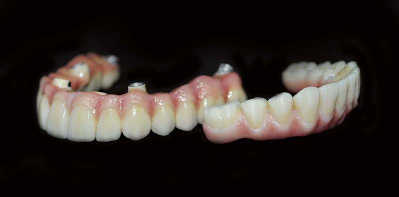

LLámanos +34 690 78 85 75
C/ de Aranjuez, 25, 1c, Tetuán, 28039 Madrid
Horario
Lun - Sáb: 8:00am - 16:30pm Dom: Cerrado
LLámanos +34 690 78 85 75
C/ de Aranjuez, 25, 1c, Tetuán, 28039 Madrid
Horario
Lun - Sáb: 8:00am - 16:30pm Dom: Cerrado
A lo largo de los años, se ha cuestionado si enfermedades como la diabetes o la osteoporosis podrían comprometer el proceso de osteointegración del implante dental y su mantenimiento a largo plazo. Una respuesta inmuno-inflamatoria alterada, el retraso en los mecanismos normales de cicatrización o modificaciones en la calidad y la cantidad del hueso alveolar son algunas de las causas que han desencadenado el estudio del tratamiento con implantes en pacientes que presentan estas enfermedades.

Qué es la diabetes
La diabetes mellitus es una enfermedad que se caracteriza por una hiperglucemia crónica porque el organismo no es capaz de sintetizar unos niveles adecuados de insulina, o porque no es capaz de utilizarla de manera eficaz. Existen básicamente dos tipos de diabetes: tipo I, que conlleva una deficiencia total de insulina (insulinodependiente); y tipo II, la más común, producida por una disminución progresiva en la secreción de insulina o una resistencia periférica a esta.
Si no tengo controlada la diabetes, ¿puedo colocarme implantes?
En los pacientes diabéticos que no presentan un adecuado control de sus niveles de glucosa (hemoglobina glicosilada > 7%) se producen alteraciones en la síntesis de colágeno y complicaciones a nivel de los vasos sanguíneos. Esto ocasiona el retraso en la cicatrización de las heridas, lo que afectaría a la capacidad de maduración del tejido donde se ha colocado el implante. Además, si la diabetes no está controlada, la respuesta inmune disminuye, lo que aumenta el riesgo que padecer una infección tras la colocación del implante.
Si mi diabetes está controlada, ¿puedo tener problemas con mis implantes?
En las personas diabéticas con un control adecuado de los niveles de glucosa, el éxito del tratamiento con implantes dentales es muy similar al de los pacientes que no padecen diabetes. Por ello, la tasa de complicaciones será parecida a la de la población sana (sin enfermedades sistémicas3) y no superior por el mero hecho de padecer diabetes. Una diabetes bien controlada no eleva el riesgo de fracaso del tratamiento con implantes.
¿Qué medidas y precauciones debo tomar antes de someterme a un tratamiento con implantes si soy diabético?
Lo primero que se debe hacer es cerciorarse de que los niveles de glucosa son adecuados. No está de más acudir al médico habitual que se encarga de revisar el control de la diabetes y explicarle que vamos a someternos a un tratamiento con implantes dentales. El siguiente paso es acudir a nuestro odontólogo para descartar la presencia de caries y otras infecciones, y evaluar la salud de las encías.
Antes de colocar un implante: tener el nivel de glucosa controlado y disponer de una buena salud de las encías.
¿Por qué es fundamental curar la periodontitis antes?
La periodontitis es una enfermedad infecciosa crónica que cursa con la destrucción de los tejidos de soporte del diente. Se ha comprobado que los pacientes con un inadecuado control de la diabetes presentan un mayor riesgo de padecer esta enfermedad y, a su vez, la periodontitis empeora el control de la glucemia. Además, se ha demostrado que esta patología bucodental constituye un factor de riesgo para la aparición de la infección periimplantaria. La periodontitis empeora el control de la glucemia.
¿Tengo mayor riesgo de tener complicaciones con la colocación de implantes dentales si tengo diabetes tipo 1 o 2?
Los estudios que han evaluado este parámetro han demostrado que si la enfermedad diabética está controlada, independientemente del tipo de diabetes, no existe mayor tasa de complicaciones asociadas a la terapia de implantes que en la población sistémicamente sana.